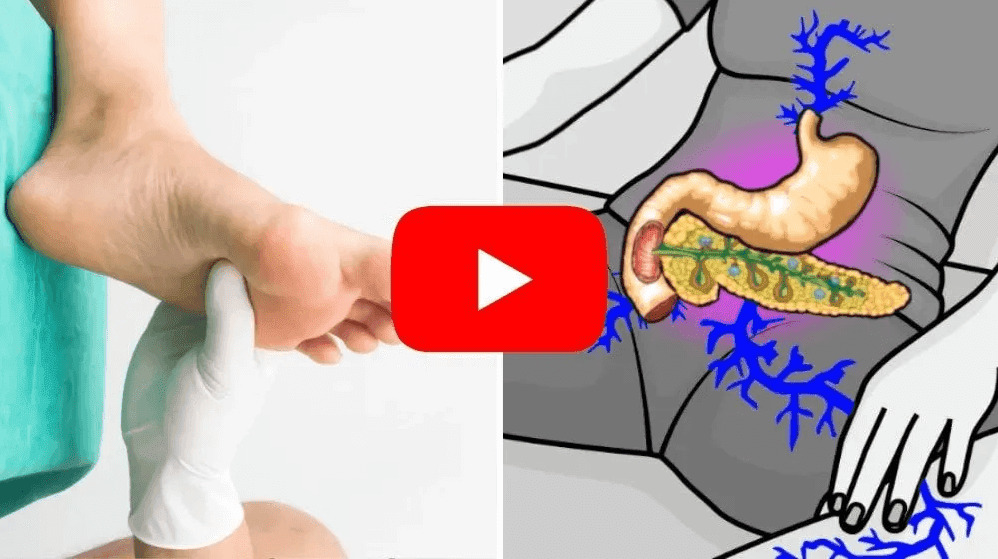

Sufres de niveles de azúcar en sangre superiores a 100? haz este método natural hoy mismo.(aprender en casa).
Si usted o un ser querido sufre de niveles incontrolados de azúcar en sangre, es prediabético o diabético tipo 2 y como consecuencia de ello tiene problemas como:

Visión borrosa, acumulación de grasa, hormigueo en las manos y los pies y no puede comer sus comidas favoritas, sepa que todo esto puede terminar esta semana con este método natural de 30 segundos.
Científicos de la Universidad de Utah acaban de revelar un método natural de 30 segundos que elimina la verdadera causa de la diabetes y la prediabetes, una molécula tóxica alojada en su páncreas que impide que libere suficiente insulina.
Gracias a este método natural hecho antes de dormir, se obliga a su cuerpo a eliminar esta molécula tóxica y estimula a su páncreas a producir insulina de forma natural…
Reduciendo drásticamente sus niveles de azúcar en sangre y revirtiendo la diabetes tipo 2 en cuestión de semanas….
Este método natural pone fin a todos los problemas causados por la diabetes, dejando también su cuerpo más esbelto, delgado y saludable..
Para saber más, haga clic en la imagen o en el botón a continuación para ver la presentación que explica todos los detalles.
Visión borrosa, acumulación de grasa, hormigueo en las manos y los pies y no puede comer sus comidas favoritas, sepa que todo esto puede terminar esta semana con este método natural de 30 segundos.
Científicos de la Universidad de Utah acaban de revelar un método natural de 30 segundos que elimina la verdadera causa de la diabetes y la prediabetes, una molécula tóxica alojada en su páncreas que impide que libere suficiente insulina.
Gracias a este método natural hecho antes de dormir, se obliga a su cuerpo a eliminar esta molécula tóxica y estimula a su páncreas a producir insulina de forma natural…
Reduciendo drásticamente sus niveles de azúcar en sangre y revirtiendo la diabetes tipo 2 en cuestión de semanas….
Este método natural pone fin a todos los problemas causados por la diabetes, dejando también su cuerpo más esbelto, delgado y saludable..
Para saber más, haga clic en la imagen o en el botón a continuación para ver la presentación que explica todos los detalles.
 Haz click aquí para ver el vídeo